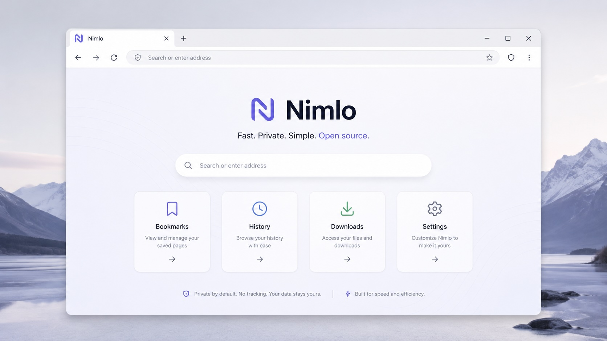

Private by default
No telemetry, no forced account, and nonpersistent browsing storage in the current build.
Nimlo exists to give the world a choice: a browser engineered for performance, privacy, local control, AI-free browsing, and the simple pleasure of exploring the web without corporate clutter. The way the web used to be.
Nimlo 0.1.0 for Apple Silicon
Try the current Nimlo app bundle as a DMG for Apple Silicon Macs. This is an experimental release, not a production browser replacement.
Requires macOS 13 or newer. Built for M-Series arm64 Macs.
Modern browsers are powerful, but they have also become enormous platforms for ads, accounts, tracking, growth systems, and features many people never asked for.
Nimlo starts small on purpose: a quiet browser shell built in Zig, using the system WebView today while growing user-owned browser features around it over time.

No telemetry, no forced account, and nonpersistent browsing storage in the current build.
The first goal is a readable browser shell with clear boundaries between app, tabs, WebView, and storage.
Nimlo does not try to replace the whole browser engine first. It ships a usable shell and deepens from there.
Nimlo is not a production browser yet. The macOS edition currently focuses on a fast, minimal shell with reliable tab and WebView lifecycle behavior.